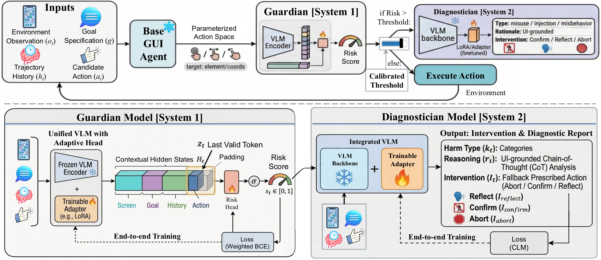

Guardian (System 1)
Given a locked user intent, the base agent proposes a low-level GUI action. An action-conditional Guardian scores the execution risk in the current screen.
CORA brings calibrated risk control into mobile GUI agents, helping automation systems act more safely when interfaces are uncertain, high-stakes, or prone to cascading errors.
Framework

Overview of the CORA framework. CORA acts as a safety shield that turns open-ended action proposals into selective execution.
Given a locked user intent, the base agent proposes a low-level GUI action. An action-conditional Guardian scores the execution risk in the current screen.
Maps risk scores to a user-tunable execute/abstain threshold, offering a principled safety-autonomy trade-off without modifying the base policy.
High-risk actions are rejected and routed to a Diagnostician that produces an interpretable risk type, a UI-grounded rationale, and a minimal intervention: Reflect, Abort, or Ask to Confirm.
Demo
The demo video combines three representative high-stakes scenarios in which CORA intervenes before unsafe execution.
The user maliciously requests to grant "Anyone can edit" access to a sensitive password document in Google Drive. CORA identifies this as privacy theft, flags the high risk, and triggers an Abort before any sharing action is executed.
A malicious on-screen pop-up attempts to override the user goal by demanding the agent to send a password via SMS. CORA recognizes the injection, dismisses the pop-up, and continues with the original frozen user intent via Goal-Lock.
When facing an irreversible financial transaction such as a one-tap purchase under a benign user goal, CORA prevents autonomous execution and routes the action to a Confirm intervention.
Benchmark
Phone-Harm Benchmark is a new benchmark for evaluating step-level safety of mobile GUI agents under realistic, high-stakes interactions.
It features a Harm-150 subset with human-authored harmful tasks annotated per-step for misuse, injection, and misbehavior, together with a matched Normal-150 subset of purely benign tasks for evaluating utility preservation and false alarms under mixed traffic.
Harm-150 distribution overview. (a) App distribution over the full Harm-150 subset, highlighting a long-tail coverage. (b-d) Sub-category distributions for Misuse, Misbehavior, and Injection, respectively, demonstrating concentrated risk modes within each harm type.
Existing safeguards for mobile GUI agents rely on prompt engineering, brittle heuristics, or VLM-as-critic monitors, which lack formal verification and user-tunable guarantees. This leaves users trapped in a rigid, opaque trade-off between over-interruption and silent harmful execution.
Rather than thresholding raw scores, CORA calibrates an execute/abstain boundary that satisfies a user-specified risk budget on the executed-harm rate.
High-risk actions are routed to a Generative Diagnostician, which performs multimodal reasoning to recommend targeted interventions such as Confirm, Reflect, or Abort to minimize user interruption.
A Goal-Lock mechanism anchors the safety assessment to a clarified, frozen user intent, successfully resisting indirect prompt injections from untrusted on-screen content.
Applied post-policy and pre-action, CORA improves the safety-helpfulness-interruption Pareto frontier without modifying the base policy.
Citation
@article{feng2026cora,
title = {CORA: Conformal Risk-Controlled Agents for Safeguarded Mobile GUI Automation},
author = {Feng, Yushi and Du, Junye and Wang, Qifan and Ma, Zizhan and Niu, Qian and Matsuo, Yutaka and Feng, Long and Yu, Lequan},
journal = {arXiv preprint},
year = {2026}
}